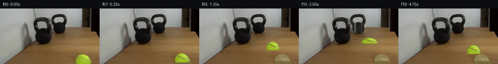

![首帧]()

Round 00
2026-11-06T07:39:54.764885+00:00像素候选变化代码 +483/−0inspection 更新
pixels f0f68a61dc8a99f1 · code 22bacafbd08b58a6
查看本轮 generate.py 真实 diff
--- previous/generate.py
+++ current/generate.py
@@ -0,0 +1,483 @@
+"""
+generate.py — Case 0154: Tennis ball rolls toward kettlebell next to mirror.
+Pure RGB pixel operations: copy/paste, transform, compositing, analytic physics.
+No external AI, no network, no subagents.
+"""
+
+import numpy as np
+from PIL import Image
+from pathlib import Path
+import artifact_io
+
+# ── Constants ──────────────────────────────────────────────────
+H, W = 144, 256
+FRAMES = 20
+FPS = 4
+WORKSPACE = Path(__file__).parent
+
+# ── Load first frame ───────────────────────────────────────────
+src = np.array(Image.open(WORKSPACE / 'first_frame.png')).astype(np.uint8)
+assert src.shape == (H, W, 3), src.shape
+
+# ── Identify tennis ball ───────────────────────────────────────
+# Ball is bright yellow-green: G dominant
+ball_bright = (
+ (src[:, :, 1].astype(int) > 130) &
+ (src[:, :, 1].astype(int) > src[:, :, 0].astype(int) + 15) &
+ (src[:, :, 1].astype(int) > src[:, :, 2].astype(int) + 15)
+)
+# Also include darker green edge pixels of ball (belong to its silhouette)
+ball_edge = (
+ (src[:, :, 1].astype(int) > 30) &
+ (src[:, :, 1].astype(int) > src[:, :, 0].astype(int)) &
+ (src[:, :, 1].astype(int) > src[:, :, 2].astype(int)) &
+ (src[:, :, 1].astype(int) <= 130)
+)
+# Constrain edge to near the bright region
+from scipy import ndimage
+ball_bright_dilated = ndimage.binary_dilation(ball_bright, structure=np.ones((5, 5)), iterations=2)
+ball_edge = ball_edge & ball_bright_dilated
+
+ball_mask = ball_bright | ball_edge
+
+# Clean up: only keep the largest connected component
+labeled, nlabels = ndimage.label(ball_mask)
+if nlabels > 0:
+ sizes = ndimage.sum(ball_mask, labeled, range(1, nlabels + 1))
+ largest_label = np.argmax(sizes) + 1
+ ball_mask = (labeled == largest_label)
+
+ball_ys, ball_xs = np.where(ball_mask)
+ball_y0, ball_y1 = ball_ys.min(), ball_ys.max()
+ball_x0, ball_x1 = ball_xs.min(), ball_xs.max()
+ball_h = ball_y1 - ball_y0 + 1
+ball_w = ball_x1 - ball_x0 + 1
+ball_center_y = (ball_y0 + ball_y1) // 2
+ball_center_x = (ball_x0 + ball_x1) // 2
+
+print(f'Ball: y=[{ball_y0},{ball_y1}], x=[{ball_x0},{ball_x1}], '
+ f'size={ball_h}x{ball_w}, center=({ball_center_x},{ball_center_y})')
+
+# ── Create ball sprite with alpha ──────────────────────────────
+ball_sprite = src.copy()
+ball_sprite[~ball_mask] = 0
+ball_alpha = ball_mask.astype(np.uint8) * 255
+
+# ── Build clean background (table without ball) ────────────────
+# The ball sits on the table. We fill the ball's region by sampling
+# adjacent table surface to the left of the ball.
+bg = src.copy()
+
+# For each row in the ball region, sample table color from x=185-194 (left of ball)
+# Use nearest-neighbor fill from surrounding table
+ball_region_mask = np.zeros((H, W), dtype=bool)
+ball_region_mask[ball_y0:ball_y1+1, ball_x0:ball_x1+1] = True
+
+# Get reference table colors from area immediately left of ball
+ref_x0 = max(0, ball_x0 - 30)
+ref_x1 = ball_x0 - 1
+ref_region = src[ball_y0:ball_y1+1, ref_x0:ref_x1+1]
+
+# For each row, fill ball area with horizontal interpolation from edges
+for y in range(ball_y0, ball_y1 + 1):
+ row_y = y - ball_y0
+ # Look at what's to the left of the ball at this row
+ left_colors = src[y, ref_x0:ref_x1+1]
+ # Average the left reference (table surface)
+ avg_color = left_colors.mean(axis=0).astype(np.uint8)
… diff truncated; 396 more lines …